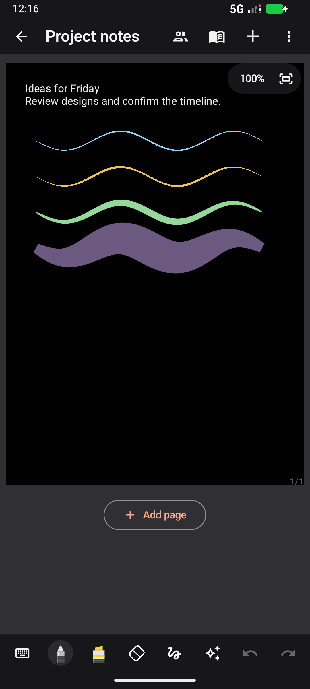
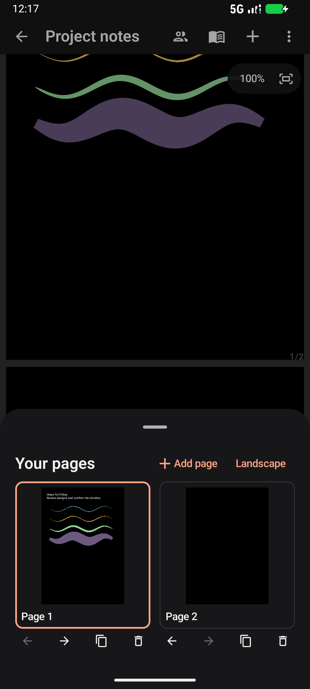
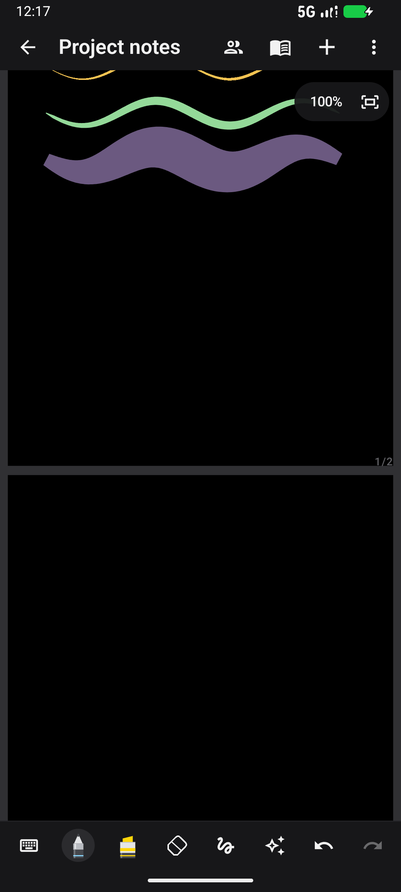
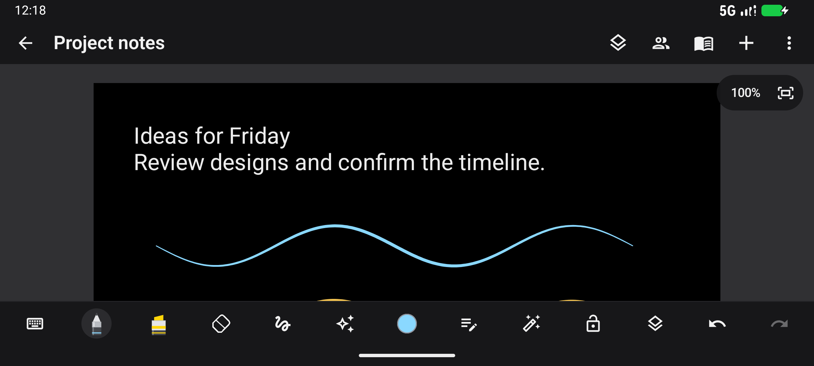
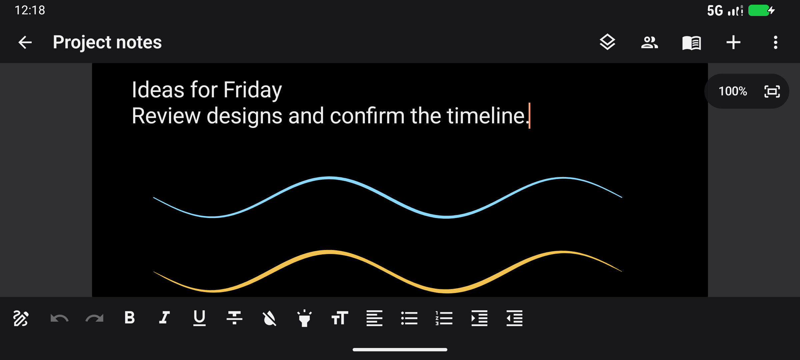

Version 1.4 (20) addresses accidental writing during pinch gestures, removes unnecessary page redraw work during zoom, and makes multiple pages and landscape controls accessible from the editor. Collaboration remains available in the header.
| Area | Behaviour |
|---|---|
| Pinch and ink | A finger stroke stays provisional until the touch sequence ends. The second finger cancels provisional ink, erasing or selection movement. Multitouch stays latched until every finger lifts, including a quick second-finger down/up and different finger-lift orders. Android cancellation discards the provisional edit. S Pen input retains priority over palm contacts, pressure and tilt samples. |
| Camera | Zoom is bounded to 15–600% of the fitted document width. Very close fingers do not generate unstable zoom ratios. Non-finite transforms are rejected. Combined pinch/pan keeps the document point under the fingers stable, and navigation keeps the document reachable. Fit-to-width is available in the zoom pill. Keyboard height changes retain the page origin; rotation preserves relative zoom and the top anchor. |
| Drawing work | Completed page commands live in retained graphics layers. Zoom changes the layer transforms; it does not regenerate every completed stroke or rich-text layout on each gesture frame. Text layouts use a bounded 128-entry cache keyed by content and typography. The viewport composes visible pages and adjacent pages rather than the entire notebook. Images and PDF backgrounds load off the UI thread. |
| Multiple pages | Pages form a vertical document with small gaps, centred paper and page counts. Ink/text/image coordinates remain local to their original pages, preserving saving, export, selection and collaboration. Add a portrait or landscape page from Insert; an Add page control follows the last page. The Pages overview contains real miniature content, navigation, duplication, reordering and deletion. |
| Editor layout | The editable title is in the compact header. Insert uses the plus control. Tool settings open on demand. Landscape exposes colour, easy writing pad, automatic shape correction, zoom lock and pages directly in the handwriting row. The text toolbar uses more of the available landscape width while retaining formatting, lists, alignment and indent controls. |
| Dark-paper highlighter | Highlighter strokes remain visible on black paper using transparent source-over rendering. Light paper and imported PDFs retain multiply blending so black text remains readable. The same paper-aware rule applies to live ink, retained pages, page previews, colour picking and PNG/PDF export. |
| Existing features | The pen styles, pressure-sensitive strokes, erasers, mixed lasso selection, text formatting, images, PDF annotation, writing pad, recording, saving and exports remain. Room creation/join, ink synchronization, reconnect and peer-aware undo use the existing collaboration service. |





All 60 tests passed: 12 JVM tests and 48 Android tests. The new regressions cover staggered/repeated pinch gestures, different lift orders and a third contact, rapid raw second-finger events, Android cancellation, provisional eraser/selection rollback, text-mode pinch, page-local ink and persistence, adding/navigating pages through the UI, finite zoom/centroid maths, cached text layouts, lower-page ink after pan/zoom in a short viewport, dark-paper highlighter pixels and export, and actual activity rotation with two-page save/reopen. The existing S Pen pressure/palm, writing-pad, document/export and three local TLS/WebSocket collaboration tests also passed. Lint: 0 errors, 77 warnings. Build/test log: build-ui-smooth-final.log (local ignored artifact).
The packaged APK was installed and reviewed in portrait and landscape using a local sample note. The screenshots above show that installed build, including page creation, scrolling across a page boundary, actual page previews, expanded handwriting controls and text formatting with the keyboard hidden. The sample strokes are generated fixtures, not a physical S Pen latency measurement.
APK: C:\Users\vardh\AndroidStudioProjects\Notepad\app\build\outputs\apk\debug\app-debug.apk, version 1.4 (20), 52,213,511 bytes. SHA256: 59B6030162130688DDCE44D6AC635F77B4F2F459764CBE0C175C43FA10FA7129.
The user's Samsung Notes portrait/landscape screenshots guided page presentation and toolbar placement. Official Samsung material confirms two-finger zoom, handwriting tools and page styles: Samsung handwriting guide, Samsung Notes guide, and Galaxy Z Fold6 manual. The earlier static APK resource inspection remains documented in the reconstruction report; no Samsung runtime or proprietary source was copied.
Collaboration is ink-only, as previously implemented; text, images, recordings and imported PDF backgrounds remain local. Same-stroke concurrent edits still use the existing whole-canvas protocol. The production endpoint and invite URLs are unchanged. See the 1.3 editor and collaboration report for those details and the remaining Samsung-specific gaps.